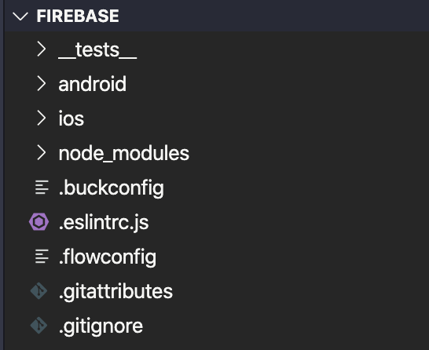
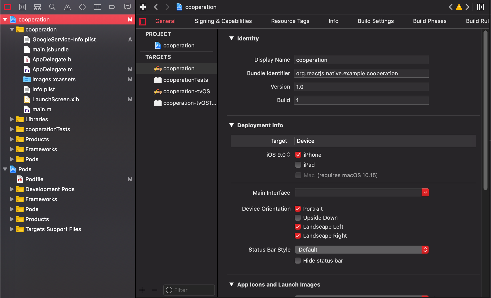

<!DOCTYPE html>
<html lang="en">
<head>
  <meta charset="UTF-8">
<meta name="viewport" content="width=device-width, initial-scale=1, maximum-scale=2">
<meta name="theme-color" content="#222">
<meta name="generator" content="Hexo 5.4.0">
  <link rel="apple-touch-icon" sizes="180x180" href="/images/apple-touch-icon-next.png">
  <link rel="icon" type="image/png" sizes="32x32" href="/images/favicon-32x32-next.png">
  <link rel="icon" type="image/png" sizes="16x16" href="/images/favicon-16x16-next.png">
  <link rel="mask-icon" href="/images/logo.svg" color="#222">

<link rel="stylesheet" href="/css/main.css">


<link rel="stylesheet" href="/lib/font-awesome/css/all.min.css">

<script id="hexo-configurations">
    var NexT = window.NexT || {};
    var CONFIG = {"hostname":"dasre.github.io","root":"/","scheme":"Mist","version":"7.8.0","exturl":false,"sidebar":{"position":"left","display":"post","padding":18,"offset":12,"onmobile":false},"copycode":{"enable":true,"show_result":false,"style":null},"back2top":{"enable":true,"sidebar":false,"scrollpercent":false},"bookmark":{"enable":false,"color":"#222","save":"auto"},"fancybox":false,"mediumzoom":false,"lazyload":false,"pangu":false,"comments":{"style":"tabs","active":null,"storage":true,"lazyload":false,"nav":null},"algolia":{"hits":{"per_page":10},"labels":{"input_placeholder":"Search for Posts","hits_empty":"We didn't find any results for the search: ${query}","hits_stats":"${hits} results found in ${time} ms"}},"localsearch":{"enable":false,"trigger":"auto","top_n_per_article":1,"unescape":false,"preload":false},"motion":{"enable":true,"async":false,"transition":{"post_block":"fadeIn","post_header":"slideDownIn","post_body":"slideDownIn","coll_header":"slideLeftIn","sidebar":"slideUpIn"}}};
  </script>

  <meta name="description" content="React Native Firebase要在React Native使用Firebase，我們可以使用React Native Firebase這個package，但在此package中有提到此package不能使用Expo CLI，因此我們要使用React Native CLI作為開發模板。詳細安裝方法參考。 在官方文件中有提到，若之前有安裝過react-native-cli這個package">
<meta property="og:type" content="article">
<meta property="og:title" content="React Native Firebase安裝筆記">
<meta property="og:url" content="https://dasre.github.io/2020/07/05/react-native/index.html">
<meta property="og:site_name" content="Andy Blog">
<meta property="og:description" content="React Native Firebase要在React Native使用Firebase，我們可以使用React Native Firebase這個package，但在此package中有提到此package不能使用Expo CLI，因此我們要使用React Native CLI作為開發模板。詳細安裝方法參考。 在官方文件中有提到，若之前有安裝過react-native-cli這個package">
<meta property="og:locale" content="en_US">
<meta property="og:image" content="https://dasre.github.io/2020/07/05/react-native/1.png">
<meta property="og:image" content="https://dasre.github.io/2020/07/05/react-native/2.png">
<meta property="og:image" content="https://dasre.github.io/2020/07/05/react-native/3.png">
<meta property="article:published_time" content="2020-07-05T07:30:30.000Z">
<meta property="article:modified_time" content="2022-02-28T14:44:58.191Z">
<meta property="article:author" content="Andy Chen">
<meta property="article:tag" content="react native">
<meta name="twitter:card" content="summary">
<meta name="twitter:image" content="https://dasre.github.io/2020/07/05/react-native/1.png">

<link rel="canonical" href="https://dasre.github.io/2020/07/05/react-native/">


<script id="page-configurations">
  // https://hexo.io/docs/variables.html
  CONFIG.page = {
    sidebar: "",
    isHome : false,
    isPost : true,
    lang   : 'en'
  };
</script>

  <title>React Native Firebase安裝筆記 | Andy Blog</title>
  


  <noscript>
  <style>
  .use-motion .brand,
  .use-motion .menu-item,
  .sidebar-inner,
  .use-motion .post-block,
  .use-motion .pagination,
  .use-motion .comments,
  .use-motion .post-header,
  .use-motion .post-body,
  .use-motion .collection-header { opacity: initial; }

  .use-motion .site-title,
  .use-motion .site-subtitle {
    opacity: initial;
    top: initial;
  }

  .use-motion .logo-line-before i { left: initial; }
  .use-motion .logo-line-after i { right: initial; }
  </style>
</noscript>

</head>

<body itemscope itemtype="http://schema.org/WebPage">
  <div class="container use-motion">
    <div class="headband"></div>

    <header class="header" itemscope itemtype="http://schema.org/WPHeader">
      <div class="header-inner"><div class="site-brand-container">
  <div class="site-nav-toggle">
    <div class="toggle" aria-label="Toggle navigation bar">
      <span class="toggle-line toggle-line-first"></span>
      <span class="toggle-line toggle-line-middle"></span>
      <span class="toggle-line toggle-line-last"></span>
    </div>
  </div>

  <div class="site-meta">

    <a href="/" class="brand" rel="start">
      <span class="logo-line-before"><i></i></span>
      <h1 class="site-title">Andy Blog</h1>
      <span class="logo-line-after"><i></i></span>
    </a>
  </div>

  <div class="site-nav-right">
    <div class="toggle popup-trigger">
    </div>
  </div>
</div>


<nav class="site-nav">
  <ul id="menu" class="main-menu menu">
        <li class="menu-item menu-item-home">

    <a href="/" rel="section"><i class="fa fa-home fa-fw"></i>Home</a>

  </li>
        <li class="menu-item menu-item-tags">

    <a href="/tags/" rel="section"><i class="fa fa-tags fa-fw"></i>Tags</a>

  </li>
        <li class="menu-item menu-item-archives">

    <a href="/archives/" rel="section"><i class="fa fa-archive fa-fw"></i>Archives</a>

  </li>
  </ul>
</nav>


</div>
    </header>

    
  <div class="back-to-top">
    <i class="fa fa-arrow-up"></i>
    <span>0%</span>
  </div>


    <main class="main">
      <div class="main-inner">
        <div class="content-wrap">
          

          <div class="content post posts-expand">
            

    
  
  
  <article itemscope itemtype="http://schema.org/Article" class="post-block" lang="en">
    <link itemprop="mainEntityOfPage" href="https://dasre.github.io/2020/07/05/react-native/">

    <span hidden itemprop="author" itemscope itemtype="http://schema.org/Person">
      <meta itemprop="image" content="/images/avatar.gif">
      <meta itemprop="name" content="Andy Chen">
      <meta itemprop="description" content="">
    </span>

    <span hidden itemprop="publisher" itemscope itemtype="http://schema.org/Organization">
      <meta itemprop="name" content="Andy Blog">
    </span>
      <header class="post-header">
        <h1 class="post-title" itemprop="name headline">
          React Native Firebase安裝筆記
        </h1>

        <div class="post-meta">
            <span class="post-meta-item">
              <span class="post-meta-item-icon">
                <i class="far fa-calendar"></i>
              </span>
              <span class="post-meta-item-text">Posted on</span>

              <time title="Created: 2020-07-05 15:30:30" itemprop="dateCreated datePublished" datetime="2020-07-05T15:30:30+08:00">2020-07-05</time>
            </span>
              <span class="post-meta-item">
                <span class="post-meta-item-icon">
                  <i class="far fa-calendar-check"></i>
                </span>
                <span class="post-meta-item-text">Edited on</span>
                <time title="Modified: 2022-02-28 22:44:58" itemprop="dateModified" datetime="2022-02-28T22:44:58+08:00">2022-02-28</time>
              </span>

          
  
  <span class="post-meta-item">
    
      <span class="post-meta-item-icon">
        <i class="far fa-comment"></i>
      </span>
      <span class="post-meta-item-text">Disqus: </span>
    
    <a title="disqus" href="/2020/07/05/react-native/#disqus_thread" itemprop="discussionUrl">
      <span class="post-comments-count disqus-comment-count" data-disqus-identifier="2020/07/05/react-native/" itemprop="commentCount"></span>
    </a>
  </span>
  
  

        </div>
      </header>

    
    
    
    <div class="post-body" itemprop="articleBody">

      
        <h1 id="React-Native-Firebase"><a href="#React-Native-Firebase" class="headerlink" title="React Native Firebase"></a>React Native Firebase</h1><p>要在React Native使用Firebase，我們可以使用React Native Firebase這個package，但在此package中有提到此package不能使用Expo CLI，因此我們要使用React Native CLI作為開發模板。詳細安裝方法<a target="_blank" rel="noopener" href="https://reactnative.dev/docs/environment-setup">參考</a>。</p>
<p>在官方文件中有提到，若之前有安裝過react-native-cli這個package，要把它移除。</p>
<hr>
<h2 id="React-Native-Firebase安裝"><a href="#React-Native-Firebase安裝" class="headerlink" title="React Native Firebase安裝"></a>React Native Firebase安裝</h2><p>根據自己的習慣使用npm或yarn安裝。</p>
<figure class="highlight zsh"><table><tr><td class="gutter"><pre><span class="line">1</span><br><span class="line">2</span><br><span class="line">3</span><br><span class="line">4</span><br><span class="line">5</span><br></pre></td><td class="code"><pre><span class="line"><span class="comment"># Using npm</span></span><br><span class="line">npm install --save @react-native-firebase/app</span><br><span class="line"></span><br><span class="line"><span class="comment"># Using Yarn</span></span><br><span class="line">yarn add @react-native-firebase/app</span><br></pre></td></tr></table></figure>
<p>在這個<code>@react-native-firebase/app</code>套件中，並不包含firebase的功能，僅是可以使用firebase，但其他功能的package會根據需求再來安裝。</p>
<hr>
<h2 id="根據要開發iOS或Android-App進行個別設定"><a href="#根據要開發iOS或Android-App進行個別設定" class="headerlink" title="根據要開發iOS或Android App進行個別設定"></a>根據要開發iOS或Android App進行個別設定</h2><p>首先我們先到Firebase網站開一新專案，是否要使用GA功能可以自己選擇。專案設立完畢且進入後，在專按名稱下方可選擇新增應用程式<br>。並分別設定將Firebase綁到iOS和Android。</p>
<h2 id="iOS-安裝"><a href="#iOS-安裝" class="headerlink" title="iOS 安裝"></a>iOS 安裝</h2><p>Firebase安裝步驟第一步，會要我們一定要輸入<code>軟體包ID</code>，而這個軟體包ID，就需要我們進入資料夾內尋找。</p>
<p>在我們前面使用React Native CLI作為開發模板時，會產生兩個資料夾，一個名稱為ios，一個名稱為android。<br></p>
<p>根據官方說明，我們要先開啟<code>/ios/&#123;projectName&#125;.xcodeproj</code>或<code>/ios/&#123;projectName&#125;.xcworkspace</code>檔案，來查看<code>軟體包ID</code>。</p>
<p>接著我們使用Xcode開啟專案，點選最上層，右側即可找到Bundle Identifier，這也是我們要將Firebase註冊到iOS第一步驟所需輸入的iOS軟體包ID。（若是使用mac進行開發，在使用React Native CLI安裝完後，ios資料夾內就會有xcworkspace的檔案）。</p>
<p></p>
<p>接下來回到Firebase安裝第二步驟，會提供一個<code>GoogleService-Info.plist</code>檔案，將他下載下來後，複製進去我們的專案內，可參考<a target="_blank" rel="noopener" href="https://rnfirebase.io/">官方文件</a>。（注意：此檔案是要複製到內層的專案內容中，並不是最外層的project中，以Xcode來看就是黃色資料夾的那層）</p>
<p>回到Firebase安裝第三步驟，新增Firebase SDK，這邊基本上就跟著網站上的內容操作（如果是使用mac來建立React Native CLI模板，則不需要額外建立Podfile）。</p>
<p>Firebase安裝第四步驟，會要我們新增初始化的code。這邊我會選擇Objective-C版本，並參考React Native Firebase的官方文件，先開啟<code>/ios/&#123;projectName&#125;/AppDelegate.m</code>文件，並在前面的import新增Firebase SDK</p>
<figure class="highlight plain"><table><tr><td class="gutter"><pre><span class="line">1</span><br></pre></td><td class="code"><pre><span class="line">#import &lt;Firebase.h&gt;</span><br></pre></td></tr></table></figure>
<p>並且找到此文件中的<code>didFinishLaunchingWithOptions</code>方法，在此方法最前面新增</p>
<figure class="highlight plain"><table><tr><td class="gutter"><pre><span class="line">1</span><br><span class="line">2</span><br><span class="line">3</span><br></pre></td><td class="code"><pre><span class="line">if ([FIRApp defaultApp] &#x3D;&#x3D; nil) &#123;</span><br><span class="line">    [FIRApp configure];</span><br><span class="line">  &#125;</span><br></pre></td></tr></table></figure>
<p>並重新building或linking。</p>
<figure class="highlight plain"><table><tr><td class="gutter"><pre><span class="line">1</span><br><span class="line">2</span><br><span class="line">3</span><br><span class="line">4</span><br></pre></td><td class="code"><pre><span class="line">cd ios&#x2F;</span><br><span class="line">pod install --repo-update</span><br><span class="line">cd ..</span><br><span class="line">npx react-native run-ios</span><br></pre></td></tr></table></figure>
<p>接下來就可以進入第五步驟。</p>
<p>在第五步驟，Firebase會測試專案是否連接Firebase，若連結成功，基本上Firebase安裝在iOS上就成功了。</p>
<h2 id="Android-安裝"><a href="#Android-安裝" class="headerlink" title="Android 安裝"></a>Android 安裝</h2><p>Android安裝過程基本上與iOS大同小異。</p>
<p>一樣參考<a target="_blank" rel="noopener" href="https://rnfirebase.io/">官方文件</a>。</p>
<p>第一步一樣要找Android套件名稱（其實就跟iOS找<code>軟體包ID</code>一樣），只是這次我們要到<code>/android/app/src/main/AndroidManifest.xml</code>找；第二步驟將<code>google-services.json</code>移入專案；第三步驟根據React Native Firebase文件新增Firebase SDK，基本上就安裝完成，較iOS還要簡單。</p>

    </div>

    
    
    
        

<div>
<ul class="post-copyright">
  <li class="post-copyright-author">
    <strong>Post author:  </strong>Andy Chen
  </li>
  <li class="post-copyright-link">
    <strong>Post link: </strong>
    <a href="https://dasre.github.io/2020/07/05/react-native/" title="React Native Firebase安裝筆記">https://dasre.github.io/2020/07/05/react-native/</a>
  </li>
  <li class="post-copyright-license">
    <strong>Copyright Notice:  </strong>All articles in this blog are licensed under <a href="https://creativecommons.org/licenses/by-nc-sa/4.0/zh-tw" rel="noopener" target="_blank"><i class="fab fa-fw fa-creative-commons"></i>BY-NC-SA</a> unless stating additionally.
  </li>
</ul>
</div>


      <footer class="post-footer">
          <div class="post-tags">
              <a href="/tags/react-native/" rel="tag"># react native</a>
          </div>

        


        
    <div class="post-nav">
      <div class="post-nav-item">
    <a href="/2020/05/16/curl/" rel="prev" title="curl">
      <i class="fa fa-chevron-left"></i> curl
    </a></div>
      <div class="post-nav-item">
    <a href="/2021/03/21/git/" rel="next" title="Git">
      Git <i class="fa fa-chevron-right"></i>
    </a></div>
    </div>
      </footer>
    
  </article>
  
  
  


          </div>
          
    
  <div class="comments">
    <div id="disqus_thread">
      <noscript>Please enable JavaScript to view the comments powered by Disqus.</noscript>
    </div>
  </div>
  

<script>
  window.addEventListener('tabs:register', () => {
    let { activeClass } = CONFIG.comments;
    if (CONFIG.comments.storage) {
      activeClass = localStorage.getItem('comments_active') || activeClass;
    }
    if (activeClass) {
      let activeTab = document.querySelector(`a[href="#comment-${activeClass}"]`);
      if (activeTab) {
        activeTab.click();
      }
    }
  });
  if (CONFIG.comments.storage) {
    window.addEventListener('tabs:click', event => {
      if (!event.target.matches('.tabs-comment .tab-content .tab-pane')) return;
      let commentClass = event.target.classList[1];
      localStorage.setItem('comments_active', commentClass);
    });
  }
</script>

        </div>
          
  
  <div class="toggle sidebar-toggle">
    <span class="toggle-line toggle-line-first"></span>
    <span class="toggle-line toggle-line-middle"></span>
    <span class="toggle-line toggle-line-last"></span>
  </div>

  <aside class="sidebar">
    <div class="sidebar-inner">

      <ul class="sidebar-nav motion-element">
        <li class="sidebar-nav-toc">
          Table of Contents
        </li>
        <li class="sidebar-nav-overview">
          Overview
        </li>
      </ul>

      <!--noindex-->
      <div class="post-toc-wrap sidebar-panel">
          <div class="post-toc motion-element"><ol class="nav"><li class="nav-item nav-level-1"><a class="nav-link" href="#React-Native-Firebase"><span class="nav-number">1.</span> <span class="nav-text">React Native Firebase</span></a><ol class="nav-child"><li class="nav-item nav-level-2"><a class="nav-link" href="#React-Native-Firebase%E5%AE%89%E8%A3%9D"><span class="nav-number">1.1.</span> <span class="nav-text">React Native Firebase安裝</span></a></li><li class="nav-item nav-level-2"><a class="nav-link" href="#%E6%A0%B9%E6%93%9A%E8%A6%81%E9%96%8B%E7%99%BCiOS%E6%88%96Android-App%E9%80%B2%E8%A1%8C%E5%80%8B%E5%88%A5%E8%A8%AD%E5%AE%9A"><span class="nav-number">1.2.</span> <span class="nav-text">根據要開發iOS或Android App進行個別設定</span></a></li><li class="nav-item nav-level-2"><a class="nav-link" href="#iOS-%E5%AE%89%E8%A3%9D"><span class="nav-number">1.3.</span> <span class="nav-text">iOS 安裝</span></a></li><li class="nav-item nav-level-2"><a class="nav-link" href="#Android-%E5%AE%89%E8%A3%9D"><span class="nav-number">1.4.</span> <span class="nav-text">Android 安裝</span></a></li></ol></li></ol></div>
      </div>
      <!--/noindex-->

      <div class="site-overview-wrap sidebar-panel">
        <div class="site-author motion-element" itemprop="author" itemscope itemtype="http://schema.org/Person">
  <p class="site-author-name" itemprop="name">Andy Chen</p>
  <div class="site-description" itemprop="description"></div>
</div>
<div class="site-state-wrap motion-element">
  <nav class="site-state">
      <div class="site-state-item site-state-posts">
          <a href="/archives/">
        
          <span class="site-state-item-count">35</span>
          <span class="site-state-item-name">posts</span>
        </a>
      </div>
      <div class="site-state-item site-state-tags">
            <a href="/tags/">
          
        <span class="site-state-item-count">9</span>
        <span class="site-state-item-name">tags</span></a>
      </div>
  </nav>
</div>
  <div class="links-of-author motion-element">
      <span class="links-of-author-item">
        <a href="https://github.com/Dasre" title="GitHub → https:&#x2F;&#x2F;github.com&#x2F;Dasre" rel="noopener" target="_blank"><i class="github fa-fw"></i>GitHub</a>
      </span>
      <span class="links-of-author-item">
        <a href="mailto:an5566x@gmail.com" title="E-Mail → mailto:an5566x@gmail.com" rel="noopener" target="_blank"><i class="envelope fa-fw"></i>E-Mail</a>
      </span>
  </div>
  <div class="cc-license motion-element" itemprop="license">
    <a href="https://creativecommons.org/licenses/by-nc-sa/4.0/zh-tw" class="cc-opacity" rel="noopener" target="_blank"></a>
  </div>


      </div>

    </div>
  </aside>
  <div id="sidebar-dimmer"></div>


      </div>
    </main>

    <footer class="footer">
      <div class="footer-inner">
        

        

<div class="copyright">
  
  &copy; 
  <span itemprop="copyrightYear">2022</span>
  <span class="with-love">
    <i class="fa fa-heart"></i>
  </span>
  <span class="author" itemprop="copyrightHolder">Andy Chen</span>
</div>

        


      </div>
    </footer>
  </div>

  
  <script src="/lib/anime.min.js"></script>
  <script src="/lib/velocity/velocity.min.js"></script>
  <script src="/lib/velocity/velocity.ui.min.js"></script>

<script src="/js/utils.js"></script>

<script src="/js/motion.js"></script>


<script src="/js/schemes/muse.js"></script>


<script src="/js/next-boot.js"></script>


  


  

  

<script>
  function loadCount() {
    var d = document, s = d.createElement('script');
    s.src = 'https://Dasre-blog.disqus.com/count.js';
    s.id = 'dsq-count-scr';
    (d.head || d.body).appendChild(s);
  }
  // defer loading until the whole page loading is completed
  window.addEventListener('load', loadCount, false);
</script>
<script>
  var disqus_config = function() {
    this.page.url = "https://dasre.github.io/2020/07/05/react-native/";
    this.page.identifier = "2020/07/05/react-native/";
    this.page.title = "React Native Firebase安裝筆記";
    };
  NexT.utils.loadComments(document.querySelector('#disqus_thread'), () => {
    if (window.DISQUS) {
      DISQUS.reset({
        reload: true,
        config: disqus_config
      });
    } else {
      var d = document, s = d.createElement('script');
      s.src = 'https://Dasre-blog.disqus.com/embed.js';
      s.setAttribute('data-timestamp', '' + +new Date());
      (d.head || d.body).appendChild(s);
    }
  });
</script>

</body>
</html>
